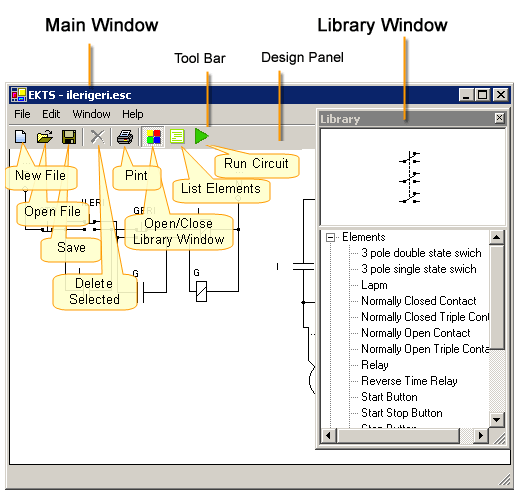

EKTS consists of two windows. Main window; used to draw electrical circuits, and the Library window; contains circuit elements. (Figure 3)

Figure 3 User interface
There is tool bar at the top of the main window. At the tool bar there are buttons for opening and saving files, print previewing, running the circuit, deleteting elements, opening and closing library window. There is a panel below tool bar for designing electric command circuits.
In library window there are grouped circuit elements and a panel for viewing selected element. To add element to the main window double click on name of the element.